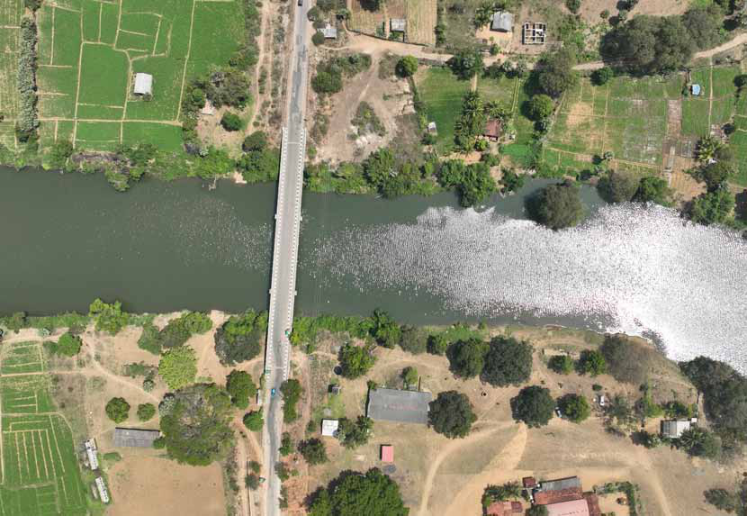
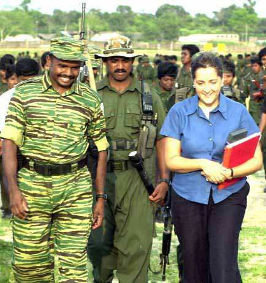
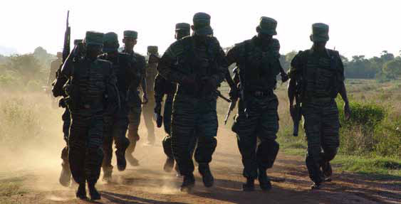
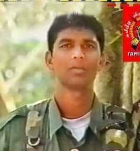
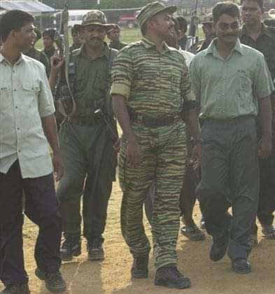
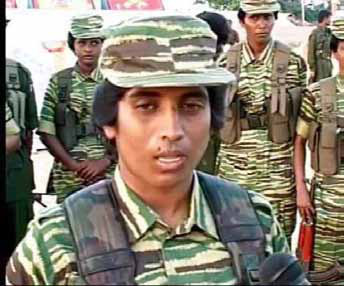
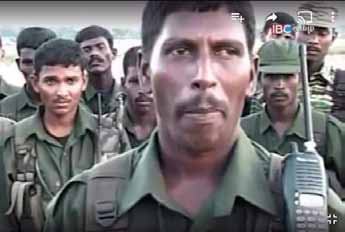
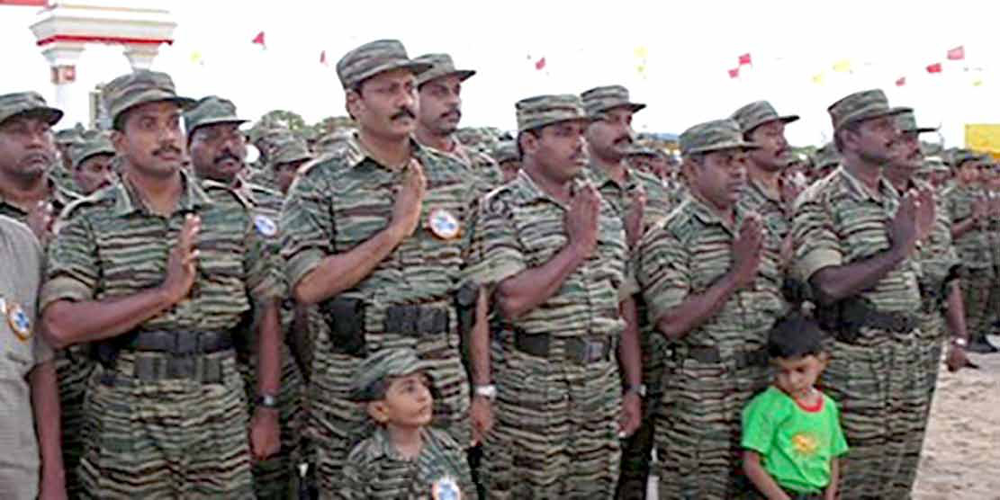
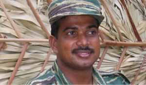

Mainland LTTE Were the Real Quislings: Karuna Amman
Mainland LTTE Were the Real Quislings: Karuna Amman
Jaffna Monitor
hellojaffnamonitor@gmail.com
19
BY:
Kaniyan Pungundran
fzpad; G+q;Fd;wd;
Mainland LTTE Were
the Real Quislings:
Karuna Amman
Part-4
Who is the Traitor?
Did you anticipate that the Vanni Tigers
would cross the Verugal River and launch
an attack on the eastern LTTE fighters?
After breaking away from the main faction of
the LTTE, I wrote earnest letters to our leader,
Prabhakaran, and sent them through the ICRC.
In my letters, I appealed to him, 'The Eastern
fighters have repeatedly saved the lives of you
and your closest allies; hundreds from the East
have embraced martyrdom in your defense, and
around 5,000 of them fell in the northern battles.
I have explained why these fighters should not be
harmed. We seek no conflict,' I wrote, and I also
mentioned that I am sending these fighters home
to save them.
I subtly conveyed that the rift was a personal
grievance between Prabhakaran and myself,
underscoring that the Eastern fighters were
innocent in this separation. Regrettably, under
the influence of commanders like Pottu Amman,
Prabhakaran made the grievous error of declaring
war on the Eastern fighters.
Interview

Jaffna Monitor hellojaffnamonitor@gmail.com 20 Coming back to your question. Indeed, I was aware that the Vanni Tigers were advancing toward the Verugal bank, yet I had not foreseen an assault. The Vanni Tigers brokered a deal with the Sri Lankan Army—their lifelong adversaries—to orchestrate an attack on their own eastern fighters. The Vanni LTTE shipped the weapons by sea from Semmalai in Mullaitivu to Mutur in Trincomalee, aided by the Sri Lankan navy. As the weapons journeyed across the sea, between 700-800 Vanni LTTE fighters traveled by bus to the Trincomalee side of the Verugal River, navigating through numerous army checkpoints and areas under government control, clearly with the army's blessings. In this scheme, the LTTE leadership collaborated closely with the Sri Lankan Army, effectively acting as a 'Quislings Group' or 'Ottukkuzhu.' Ironically, they labelled us as the 'Ottukkuzhu,' accusing us of colluding with the army when, in fact, their own actions were those of a true Quislings Group. I do not blame the army; as our adversaries, they naturally preferred to see both factions of the LTTE weakened by internal conflict. I was fully cognizant of the unfolding events. Even the day before the Verugal attack, I visited the riverbank and engaged with the Vanni Tigers stationed across the river. I questioned them earnestly, "Why are you coming? Why must we engage in fratricidal fighting and die?" What subsequently occurred after your conversation with the Vanni Tigers? Aerial view of the Verugal River

Jaffna Monitor hellojaffnamonitor@gmail.com 21 A tragic event unfolded the very next day. They launched a sudden and brutal attack at midnight on the women's regiment stationed there, resulting in the senseless loss of approximately 40 innocent female fighters. At that moment, I was actively engaged in sending my Eastern fighters back to their homes after having them lay down their weapons in a bid for peace. While we were in the process of demobilizing, the Vanni LTTE forces crossed the river and mercilessly targeted the women fighters, catching us completely off guard. My intention was never to engage in further violence; the fratricidal killings that plagued our land following the departure of the Indian Peace Keeping Force (IPKF) from Sri Lankan soil had left a deep scar on my conscience. After the IPKF left, the LTTE's violent purges claimed the lives of about 8,000 Tamil youths from various militant factions, predominantly those associated with the Tamil National Army (TNA). Having witnessed and been a part of such horrors, I was determined to prevent any further bloodshed among our people. That resolve led me to ensure that my fighters were sent home safely after they had abandoned their arms. The Eastern fighters and commanders stationed at the Verugal River told us that you should have given them instructions on how to conduct offence or defence when attacked...


Jaffna Monitor hellojaffnamonitor@gmail.com 22 Actually, I did not give any instructions, and I also had not anticipated that they would attack us. I knew they came with weapons and in large numbers, but I never thought they would launch a military attack against us. I also informed the LTTE leadership that if they came to attack us, I would not order a retaliation; instead, I wrote that I would send my fighters back home. When did you send your Eastern fighters home? After the Vanni Tigers launched their attack or before that? I had begun sending my Eastern fighters home before the Vanni Tigers attacked us on April 10, 2004. By the next day, April 11, I planned to send all fighters home, having already called a meeting with Eastern commanders like Jimkelly Thatha and Robert. The strategy was to send ordinary fighters home while keeping key commanders with me to take abroad, as they were under threat from the LTTE leadership. Who led the invasion from the North to the East? The invasion was meticulously planned. The primary force was the Charles Antony Regiment, led by Nagulan, who targeted us. Banu served as the overall commander of this operation. Eastern commander Ramesh was also involved with them. Nagulan, who is still alive, committed numerous atrocities in the Eastern region during this time. Why did you not attack? Did your Eastern fighters have the ability to fight back against the Vanni LTTE? We had the manpower and resources to retaliate against the Vanni Tigers. Had we launched an attack, it would have been a straightforward task. Under my command, 6,000 fighters were trained to follow my directives and those of my Eastern commanders. Our strength wasn't limited to manpower alone; we also had significant weaponry at our disposal. Among us were battle-hardened, experienced fighters and commanders who had participated in the Jeyasikkuru battle. Had I ordered a counterattack, they would have crushed the opposition in hours. We could have driven them all the way to Muthur. However, I was firmly opposed to a fratricidal war. The commanders who led the attack against us, such as Banu and Nagulan from the Charles Antony Regiment, were not seasoned fighters. They were the type who might have fled had we struck back. We have seen these commanders' true valour and skill in the final battle (laughs). Did every Eastern commander accept your decision to split with the mainland LTTE? Before publicly announcing my decision, I convened a meeting with key commanders from the Eastern region. I shared my concerns that the ongoing conflict was stagnating and that the LTTE leadership was not genuinely committed to its peace negotiations with the Sri Lankan government. I warned them that Leader Prabhakaran would likely break the ceasefire soon and that hostilities would likely resume. I further explained that he was not open to considering any solutions, including federalism or anything similar. I told my commanders that I was unwilling to lose more of my fighters and emphasized how the LTTE leadership had
Jaffna Monitor hellojaffnamonitor@gmail.com 23 failed to properly respect and represent Eastern fighters. Furthermore, I declared that anyone who wished to remain with me was welcome, and those who preferred to stay with the LTTE leadership could go to Vanni. Following this declaration, Eastern commanders like Ramesh, Karikalan, Prabha, and a few others chose to leave for Vanni. I allowed them to go peacefully; I did not stop or attack them, as I did not intend to engage in combat with the Vanni Tigers. What was your strategy at that time? My primary objective was to safely send the fighters back to their homes. While my commanders voiced concerns about my personal security, I reassured them that I was capable of protecting myself. More importantly, I was committed to ensuring the safety of my commanders. I requested they join me in Colombo, where I intended to negotiate with the Sri Lankan government. Recognizing the dangers they faced, my ultimate goal was to arrange for my commanders to go abroad, as they were likely to be prime targets for the LTTE leadership. About 35 to 40 important Eastern commanders accompanied me to Colombo. However, during our stay, Pottu Amman and his associates contacted the commanders via phone. They spoke in soothing, persuasive tones, reminding them of the greater cause we all had once fought for. They implored, 'Why are you leaving us?' and assured them that leader Prabhakaran had granted them amnesty, inviting them to return freely to Batticaloa. Convinced by these reassurances, commanders, including Robert, Jimkelly Thatha, Visu Thurai, and a few others— resulting in 18 key LTTE commanders— decided to return to Batticaloa. Tragically, upon their return, they were deceitfully arrested and met with gruesome fates. For example, Robert and Jimkelly Thatha were horrifically tied to a tree, doused with kerosene, and burned alive by Charles Antony Brigade Commander Nagulan—a right-hand man of Pottu Amman—who now resides in the Jaffna Neerveli area and has taken up farming after surrendering to the military in the last war. How do you view these killings? These killings represent the utmost betrayal. When I, Karuna Amman, decided to split, the LTTE leadership dismissed my actions, claiming that I was merely one individual and that the Eastern LTTE fighters were distinct from me. They also claimed that my departure would not impact their struggle. However, the grim fate of those Eastern Robert

Jaffna Monitor hellojaffnamonitor@gmail.com 24 commanders who surrendered to the Vanni Tigers, lured by their seemingly sincere promises, tells a different story. None were spared; each commander was mercilessly executed. Had those who surrendered survived, it might have suggested that my actions were traitorous, and even my own conscience would have tormented me. However, the brutal extermination of those who surrendered only affirmed my stance and clearly vindicated me. Among those lost were highly regarded commanders of both genders, including Saali, Theentamil, Premini, Jimkalli Thatha, and Robert—heroes of the Jeyasikkuru battle. Other notable figures, such as the political leader Turai, Visu, and Nisam, also suffered tragic fates. Leader Prabhakaran directly ordered these actions. They returned to the Vanni Tigers, deeply trusting leader Prabhakaran. There was no inherent animosity between them and the leadership, nor among the fighters from different regions. Loyalty would have prevailed until their end. However, the decision of the LTTE leadership to execute these individuals starkly illustrates the cruel mindset of the leadership. There are still accusations that you abandoned your commanders and fighters and escaped. How do you respond to these claims? Those accusations are unfounded. I prioritized the safety of my forces by sending the ordinary fighters back home, and I took my From left to right - Robert, Castro, and Karuna Amman Sally alias Nilavini, the then women's political leader of the east, who was later surrendered to mainland LTTE and killed by them Jimkelly Thaatha, who along with Robert and others, surrendered to the mainland LTTE and was later burned to death at Panchimarathadi



Jaffna Monitor hellojaffnamonitor@gmail.com 25 key commanders with me to Colombo to ensure their protection. However, despite my warnings, they were persuaded to return to Batticaloa by the sweet-talking of Pottu Amman and his associates. I explicitly advised them against returning and cautioned them not to trust Pottu Amman. A few journalists and writers suggest that you intentionally moved your regiments to Verugal to fight with the Vanni Tigers should they cross. How much truth is there in this? This is absolutely nonsense and an absolute lie. There are many fighters still alive; you can ask them. I never instigated or gave commands to any Eastern fighters to attack the Vanni Tigers. I was very clear that another fratricidal murder should not happen again. Why were those regiments stationed at the Verugal River? Stationing regiments at the Verugal River is standard procedure. The forces deployed on the Batticaloa side of the Verugal River primarily hailed from the Vagarai region; it was their standard post. Additionally, a few regiments were temporarily stationed there for training purposes over several months. If my intention had been to engage the Vanni Tigers in combat, I could have easily deployed my main fighting forces to that location and effectively challenged the Vanni Tigers. However, that was not my objective; I did not wish to escalate the conflict. Is it true that the female fighters from the Eastern region were sexually assaulted in the Verugal area by the invading Vanni Tigers? Left to right, Nagulan, Pottu Amman, Gopal, Ram, Gaddafi—all prominent LTTE faces. The small child standing with Pottu Amman is his third son, Kallaikannan, who was killed in the war in mid-May 2009 Nagulan


Jaffna Monitor hellojaffnamonitor@gmail.com 26 Yes, I have been informed by the people of Kathiraveli about such incidents. They shared distressing accounts of witnessing these atrocities, which spurred the locals to confront the Vanni Tigers with broomsticks in their outrage. I am sure that it was the Vanni Tigers who attacked us and committed these heinous acts. Do you believe the Vanni Tigers committed these acts? Yes, I do believe so. They were deployed to the East without any restraint, behaving like wild animals. They were ordered to commit atrocities to crush the Eastern fighters, so it's very likely that they also perpetrated cruel acts against our female fighters. Has this kind of behaviour occurred in the past, such as the LTTE sexually assaulting female fighters from other militant organizations? No, never. In the past, any misconduct toward women was met with the severest of penalties, including the death sentence. Leader Prabhakaran and I were very strict on this matter. I believe this is the first time in the history of the LTTE that members have indulged in such cruel sexual violence against women, tragically against their own fighters. There are claims that the burning incident was orchestrated by Ramesh, a former Eastern commander. How do you respond to this? No, that claim is incorrect. It was Nagulan, not Ramesh, who orchestrated the burning. Although Ramesh is Robert's own cousin, his role was different. He spoke persuasively to the commanders, convincing them to return, and then handed them over to Nagulan. The actual act of burning these commanders to death was carried out by Nagulan at an LTTE base located in Panchimarathadi in the Thoppigala forest. Those involved in this heinous act are still alive, and it is possible to meet and speak with them about the incident. There are opinions that you should have commemorated the Verugal massacre but chose not to. What is your response to this? It is undeniable that the fighters who lost their lives at Verugal deserve to be remembered, and I fully acknowledge the importance of commemorating them. However, my hesitation stems from a desire to ensure that such remembrances do not foster division between the Eastern and Northern Tamils. I am very conscious of the potential for such events to instigate hatred between these communities, which would not be productive or beneficial. The Vanni Tigers did not just strike at Verugal; they also killed almost 500 Eastern LTTE fighters in other parts of the East, and these fighters, too, should be honoured in the future, our party plans to commemorate all LTTE fighters, including those who died at Verugal. Moreover, it's important to highlight that it was the Vanni Tigers, not us, who perpetrated the fratricidal violence in the East. They collaborated with the Sri Lankan army and navy, leveraging this alliance to attack us.